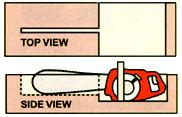

Mother's longest-running department is "Country Lore". To celebrate this 200th issue, here are top Lore tips from the 1970's. To make a contribution to future issues, send your tips, with photos if possible, to: "Country Lore;" Mother Earth News: 1503 S.W., 42nd St.; Topeka, KS 66609-1265 or send an e-mail to letters@motherearthnews.com . We'll pay $25 to $50 for each letter we publish.
A fter a long, dusty day of working in the garden, about all most of us can think of is a good hot bath. "But wait!" says Pat Mestern of Fergus, Ontario, Canada. "Raid your herb border first ... that is, if you want the most refreshing and sensuous ablutions you've ever enjoyed. Gather a goodly bunch of mint, lemon balm, fruit sage or chamomile. Tie the sprigs together (picking 'em at least 5 inches long makes it easier) and toss the aromatic bundle into your tub under the running water. A marvelous aura of herbs will permeate the steam while you soak and soap... especially if you use your bouquet garnish as a gentle sponge." It sounds downright habit-forming, Pat!
September/October 1978
John Palermo of St. Petersburg, Florida, has discovered a surefire recipe for an unusual white bread ... and it's flavored with beer! Just put 3 cups of self-rising flour into a mixing bowl along with 3 tablespoons of sugar and one can of beer. Mix the ingredients thoroughly, put the dough into a greased pan, and pop it into a 350-degree oven. John warns that you should have plenty of room in your oven because the dough will rise "beyond all imagination."
After about 45 minutes, remove the loaf and brush a well-beaten egg on top of the bread. Place it back into the oven for about 15 more minutes to brown its crust. Wow, what a soft and flavorful treat! (And folks who never touch alcohol needn't worry about this recipe because all the alcohol evaporates away during the baking process.)
July/August 1978
You say you want to save money by burnin' newspapers in the ol' wood stove, but you don't want to shell out cash for a fancy logrolling gadget. Then save your pesos, says Columbia Station, Ohio's Leonard Sotz, and make your own paper rounds! Just lay a 1/2-inch stack of newspapers on top of a 2-foot piece of wire (a coat hanger works fine) so that both ends of the metal strand still show. Then roll the papers into a snug log, wrap the wire around this print cylinder and twist the metal's ends to secure your " Daily Times timber".
Mr. Sotz says you should only add paper rounds to an already hot fire. The Buckeye State wood-burner also notes that it you pick the wire out of the ashes when the flames die down-you can use the same log binder over and over ... for at least a year!
November/December 1979
Everyone knows that sunflowers are easy to raise, produce beautiful flowers and bear seeds that make delicious, healthful food snacks ... but have you ever heard of anyone using these flowers to grow a child's playhouse?
Marta Coleman of Fulton, Kentucky, plants several dozen giant sunflowers in a large rectangular-shaped "row" in her back yard. Then, as the plants develop-tightly spaced, side by side-the playhouse actually sprouts and comes alive, like something out of Jack and the Beanstalk!
A 2-foot section is left unplanted along the front for use as a door to Marta's sunflower castle. And, when the stalks are about 5 feet tall, she leans their tops together and ties 'em with string. This extra trick adds the "roof" and keeps the tall flowers from falling over when they're fully grown.
July/August 1978
After spending two fruitless hours trying to restrain my ornery, worm-ridden goats, I decided to quit giving pills to the animals and try the squirtable paste wormers instead," recalls Sharon Carpenter of Sheridan, Oregon. "Sure enough, the gluey healers were a cinch to administer-just squirt 'em in the critters' mouths and the goats smack their lips-but the medicines were too dinged expensive! So now I crush one of the inexpensive tablets into a tablespoon of peanut butter and use that tasty paste instead I get the best of both worlds: relief from goat-gnawed fingers ... and a one-tenth-the-cost bargain!"
September/October 1979
Lots of folks know the trick of covering your crock of homemade sauerkraut with a large plastic bag full of water, but Everett Schister of Rio, Illinois, has miniaturized the same principle and applied it to the kitchen sink. So, the next time you lose-or your dog chews up-your drain plug, says Everett, just put a little water in a plastic sandwich bag and tie it shut. Such an improvised sink stopper-complete with its own handle-will plug your basin or tub just fine.
September/October 1979
Lost your mittens already? Don't fret. For just a few pennies and a few minutes' time you can have more, says Helen O'Neal of Kansas City, Kansas.
Start with a shrunken, o utmoded or otherwise unwearable wool or cashmere sweater (the kind you can obtain very inexpensively at garage sales and thrift shops). Turn the garment wrong side out, lay it on a flat surface, and lay your hands one at a time on the double thickness of material (right hand on the sweater's right side, left hand on the left side) so that the ribbed waistband will form the cuff of your mitten-to-be. (Allow plenty of length to go under your coat sleeves.) Trace around each hand with a pencil or pen.
Next, sew along the lines you've drawn. Then cut the mittens out of the sweater ... about 1/4 inch beyond the stitching. To prevent unraveling, bind the scissored edge with a 3/4-inch-wide strip of nylon tricot that you've cut from an old slip or pair of undies. (Tricot makes a soft, thin binding that stretches and won't fray.) Turn the mitten right side out, and it's ready to wear!
For socks to match your new hand-warmers, sew the armhole (body) end of each sweater sleeve closed, in a curved shape. Cut and bind as you did the mittens, then turn 'em right-side out. The ribbed sleeve cuffs are now the tops of your soft, moisture-resistant socks.
January/February 1978
If you grit your teeth when it's time to wax and buff those rustic hardwood floors, you might want to try Jan Hume's system: "The Young People's Buffing Party."
"The action starts," says the Warsaw, New Yorker, "after the furniture's all pushed aside and you've laid a milky cloud of new wax across your clean floor. All you do is gather up your young'uns (along with any neighbor children you can get to drop over) and have the urchins dress up in woolly socks and broken-in play clothes. Then turn the little folk loose in that waxy room to do all the runnin' and slippin' and slidin' and stompin' and dancin' and rasslin' and carryin' on that you're always telling them NOT to do! The neighboring tykes will pitch right in like Tom Sawyer's cronies, and before long you'll have a human buffer over every corner of the floor.
"The next-and most vital-step," Jan says, "is to retreat to your kitchen and mix up a batch of cookies and some cocoa. Not only will that task preserve your sanity amid the craziness of the buffing party, but the homemade goodies will likely be the only way to get the youngsters to quit before they wear your floor out!"
September/October 1979
We never thought we'd get a down-home country tip from Ivan Pavlov! But Marjorie Watt of Old Monroe, Missouri, tells us that an idea she borrowed from the eminent Russian scientist helped her get out of a very difficult situation. Marj's brainstorm came to her when a fence washed away and she and her husband spent the next four days searching for their stray calves. After that, the Watts decided to ring a cowbell every day at 6:00 p.m.-right before they fed the young heifers-to try to call the animals home.
Did the treatment work? Heck, those hungry calves came a-scurryin' at the sound of that dinner clanger after only three days! "Not only that," says Marjorie,"now everything answers the call of the bell: calves, horses, ducks, geese and pigs!"
March/April 1979
W ill you be clearing land in the spring? Before you chip all those saplings down to ground level, remember this advice given to Mary Gene Beheler of Ona, West Virginia, by her neighbor (a farmer with 50 years of experience): Cut the saplings off at waist height, because the longer stumps will rot more readily and are much less hazardous to grazing critters and tractor tires.
May/June 1978
Problem: How to hold a chainsaw steady while you're sharpening the chain. Solution: Make a jig like the one described by Bernard Davies of Remsen, New York. You'll not only save time, but you'll also have a sharper saw because you'll be able to file all the teeth at the same angle. Also, by making the sharpening chore easier, you'll be encouraging yourself to do the job as soon as it becomes necessary, rather than putting it off till the chain is hopelessly dull and much harder to hone.
Ready to begin? Select a log that's at least 14 inches in diameter and make a single rip cut down its center, as shown in the diagram below. This gash should be slightly longer than the chain saw bar, and deep enough so that just the top inch of the bar and chain protrudes.
Next, saw out a rectangular opening in the chunk of wood (at one end of the cut) so that the power-head portion of the saw will just fit into the cut-out space, with 1 inch of bare chain exposed. Then set the saw in the jig and file away!
November/December 1977
This next piece of down-home country lore is downright unpractical. It won't cure scours, save thread or even fix a leak in a tractor's oil tank, but it may warm some hearts.
"My sister-in-law and I both tried to keep daily diaries," says Cheryl Tavares of Newfield, New York, "but somehow we always stopped writing in them. Now we jot down what's happening once a week, and mail this news to each other. At the end of the year, we give the letters back and each of us has a journal to keep! Plus, we're able to stay in close touch this way, even though we live more than 300 miles apart."
November/December 1979
You'll find it easy, says Judith Silverstein of San Ysidro, New Mexico, to unload a 55-gallon drum-or any closed barrel of water, gas or kerosene-from your truck, even by yourself, if you'll place a stack of old, rimless tires on the ground below the tailgate. First make sure the container's plugs or seals are secure, then tip the barrel and let it down onto its side. Roll the container to the edge of the tailgate and gently ease it off onto the tires. Make sure the tires are placed so the barrel will drop more or less square ly in the middle-and not bounce or roll off-and you'll find you can stand the vessel upright off its cushioning.
November/December 1979
Mother Earth News
|
|
|
 |
|
|
|
|